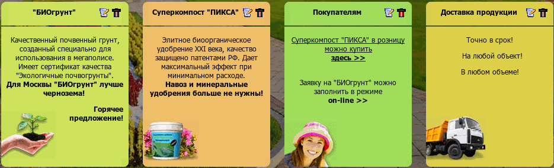

Название
Информационные блоки — Повторяющиеся текстовые блоки на страницах сайта
О плагине
Этот плагин позволяет отображать на многих страницах сайта некоторый статический текст, например, какие-либо объявления или заметки.

 Создать
Создать Удалить
УдалитьСвойства информационного блока
- Страницы
Страницы сайта, на которых будет отображаться данный информационный блок.
- Расположение
Определение положения на странице для данной заметки.
- Название
Заголовок информационного блока.
- Содержание
Форматированный текст информационного блока.